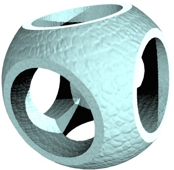

Publications related to OpenCSG
Back to main page
Publications related to OpenCSGBack to main page |
|
|
Journal of WSCG, 12(2):221-228, 2004. Abstract: Image-based CSG rendering algorithms for standard graphics hardware rely on multipass rendering that includes reading and writing large amounts of pixel data from and to the frame buffer. Since the performance of this data path has hardly improved over the last years, we describe new implementation techniques that efficiently use modern graphics hardware. 1) The render-to-texture ability is used to temporarily store shape visibility, avoiding the expensive copy of z-buffer content to external memory. Shape visibility is encoded discretely instead of using depth values. Hence, the technique is also not susceptible to artifacts in contrast to previously described methods. 2) We present an image-based technique for calculating the depth complexity of a CSG shape that avoids reading and analyzing pixel data from the frame buffer. Both techniques optimize various CSG rendering algorithms, namely the Goldfeather and the layered Goldfeather algorithm, and the Sequenced-Convex-Subtraction (SCS) algorithm. This way, these image-based CSG algorithms now operate accelerated by graphics hardware and, therefore, represent a significant improvement towards real-time image-based CSG rendering for complex models. Download: |
 |
|
Proceedings of the FREENIX / Open Source Track, 2005 USENIX Annual Technical Conference, 129-140, 2005. Abstract: We present the design and implementation of a real-time 3D graphics library for Constructive Solid Geometry (CSG). This major approach of 3D modeling has not been supported by real-time computer graphics until recently. We describe two essential image-based CSG rendering algorithms and an API that provides a compact access to their complex functionality and implementation. As an important feature, the CSG library seamlessly integrates application-defined 3D shapes as primitives of CSG operations to ensure high adaptability and openness. We also outline optimization techniques to improve the performance in the case of complex CSG models. A number of use cases demonstrate potential applications of the library. Download: |
|
Published online, URN: urn:nbn:de:kobv:517-opus-6079, 2005. In my doctoral dissertation, I discuss how to integrate a variety of different rendering algorithms, such as shadow mapping, reflection algorithms, bump mapping, CSG rendering, etc., into a scene graph system. The goal is to be able to use and combine several of those algorithms at the same time. To simplify this task for the programmer using the scene graph, the rendering effects are specified in the scene graph in a declarative way, without notion of settings of the graphics hardware or of the required rendering algorithms. Those are, consequently, derived internally by the library for evaluating the scene graph. In practice, this means that using this system I have combined all algorithms provided by OpenCSG with different flavors of shadow mapping, stenciled and textured reflections, environment mapping and bump mapping. |
 |
© 2006 Florian Kirsch.
Last change: 29.01.2006